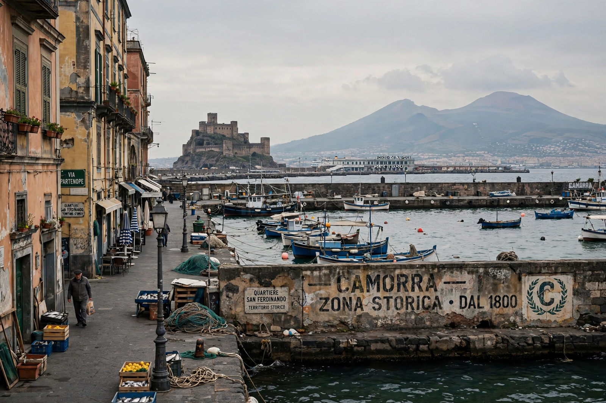

Camorra
From Wikipedia, the free encyclopedia

The Camorra is an Italian Mafia-type criminal organisation originating in Campania, centred on Naples. Unlike Sicily's pyramidal Sicilian Mafia, the Camorra is a horizontal federation of competing clans — dozens of them — embedded in the city's neighbourhoods and towns, dealing in drug trafficking, extortion, waste disposal, counterfeiting and the construction economy. It is among Europe's most powerful and violent criminal networks, and its internal wars (notably the Scampia feud of 2004–05) are notorious.
History
The Camorra's roots lie in nineteenth-century Naples — prison gangs and Bourbon-era smuggling networks — making it possibly Italy's oldest mafia-type organisation; the word's origin is disputed (from capo + morra, a street-gambling game, is one theory). Repressed under Fascism, it revived in the post-war cigarette-smuggling trade; Raffaele Cutolo's Nuova Camorra Organizzata (1970s) tried to unify it and failed in a bloody war with the rival Nuova Famiglia.
Modern Camorra
Clans such as the Casalesi (in the Caserta hinterland, authors of the toxic-waste dumping exposed in Roberto Saviano's Gomorrah, 2006) run globalised businesses — the Camorra was an early investor in European cocaine logistics networks in Spain and the Netherlands — while neighbourhood clans recruit teenagers (the paranze dei bambini, 'baby gangs') whose feuds keep Naples' murder rate spiking. Maxi-trials and pentiti (turncoats) have jailed hundreds of members without dissolving the federation's regenerative structure.